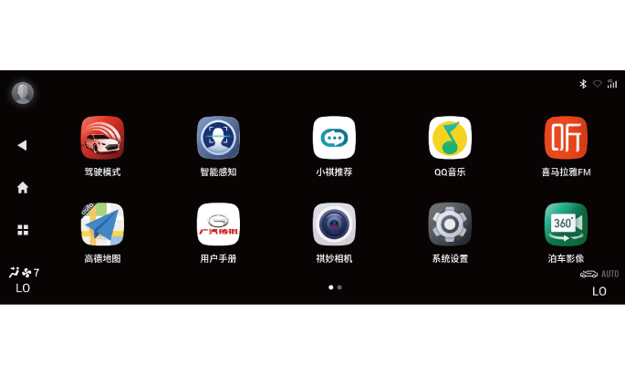
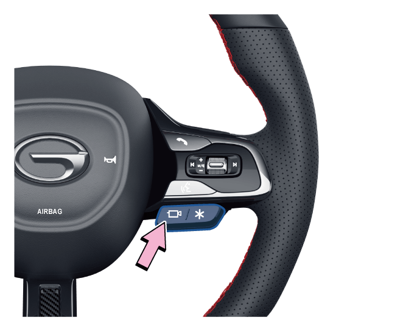

2.整车电源在“ON”挡位时，通过点击桌面左侧系统导航栏的菜单键
全景泊车系统通过采集车辆前、后、左、右四个方向的图像，并将其拼接为车辆周围360°环境鸟瞰图，通过音响系统显示屏显示，可实时为驾驶员提供车辆周边环境信息，减少行车盲区。还可结合方向盘转角和车辆尺寸等参数预测车辆运动轨迹，将其叠加于全景影像中，让驾驶员充分了解车辆行驶方向，判断倒车是否安全。
开启和关闭
1. 通过换挡杆可开启和关闭全景泊车系统，整车电源在“ON”挡位时：
– 挡位切换至“R”挡时，全景泊车系统自动开启。
– 挡位切换出“R”挡，且驾驶员无相关操作时，全景泊车系统会显示30s后自动退出。


3.通过方向盘右侧全景影像按键开启和关闭：
整车电源在“ON”挡位时，按下方向盘右侧全景影像按键，开启全景泊车系统；再次按下方向盘右侧全景影像按键，关闭全景泊车系统。
提示+
–系统开启时，音响系统显示屏显示车辆四周拍摄的画面及辅助线。
–若车辆前进时车速大于20km/h时，系统将自动关闭。
–车辆处于非“R”挡且系统激活时间大于30s时，系统将自动关闭（车速为零时）。
–若音响系统未完全开启时，无法正常使用系统。
界面说明

① 退出按键
② 当前视角
③ 拼接图显示区
④ 文字提示弹窗
⑤ 动态轨迹线
⑥ 单视图显示区
⑦ 设置按键
⑧ 2D/3D视图切换按键
⑨ 雷达提示音开关
2D视图界面：

⑦ 触摸拼接图显示区域③车辆的前、后、左、右区域，单视图显示区⑥会切换显示前、后、左、右单视图界面。
⑧ 点击3D按键切换至360全景+3D模拟模式。
提示+
–显示界面说明仅供参考，如有差异，请以实车为准。
–换挡杆在“R”挡位时，系统默认为后视界面；换挡杆在非“R”挡位时，系统默认为前视界面。

全景泊车系统设置
短按设置按键⑦，进入全景泊车设置界面，可对以下选项进行设置。
–轨迹线开关：开启后，显示界面会显示动态轨迹线，随着方向盘的转动而转动。
–P挡退出：设置挡位挂出P挡时显示界面退出的时间。
–转向信号灯激活全景：开启后，开启转向信号灯或应急灯时即可激活全景影像功能。
–雷达激活全景：开启后，倒车雷达工作时即可激活全景影像功能。
摄像头分布

前摄像头安装在前车标下方。

左/右摄像头分别安装在左/右侧外后视镜底部。

后视摄像头安装在牌照灯旁。
注意+
– 请保持摄像头表面清洁。
–不要用高压清洗器对摄像头进行长时间清洗，并且清洗时要与摄像头保持至少30cm的距离。
行车记录功能
该系统带有行车记录功能，插入TF卡后行车记录功能中的录制、相册、设置功能可以操作，通过采集车辆前、后、左、右四个方向的视频并进行处理合成，在音响系统显示屏上进行显示及回放，记录的视频信息储存于全景泊车ECU的TF卡中。
通过点击音响主机应用菜单界面的“行车记录”软按键，进入行车记录功能主界面。
–插入TF卡后，行车记录仪默认进入录制状态，音响主机状态栏

1.拍照
拍照：点击软按键①拍照记录当前环视图片，并保存到TF卡中。
2.相册
点击软按键②进入相册菜单界面。
通过相册菜单界面可以选择对记录的视频及图像进行单独显示回放。也可以选择对视频或图像文件进行锁定或删除。
3.设置
点击软按键③进入设置菜单界面。
通过设置菜单可以对视频录制状态和时间进行设置。同时，也可以通过格式化软按键对TF卡进行格式化。
注意+
–正在录制的视频不会在菜单栏中显示。
–原车不带行车记录TF卡，用户需自行购买，安装TF卡后方可正常使用行车记录功能。TF卡要求16G或32G、Class10标准。
–视频录制过程中请勿直接拔TF卡，需正常断电后方可操作。
行车记录TF卡安装位置

全景泊车ECU及TF卡安装在主驾驶座椅下面。
–掀开地毯上的魔术贴即可看见。
— 页面到底了 —